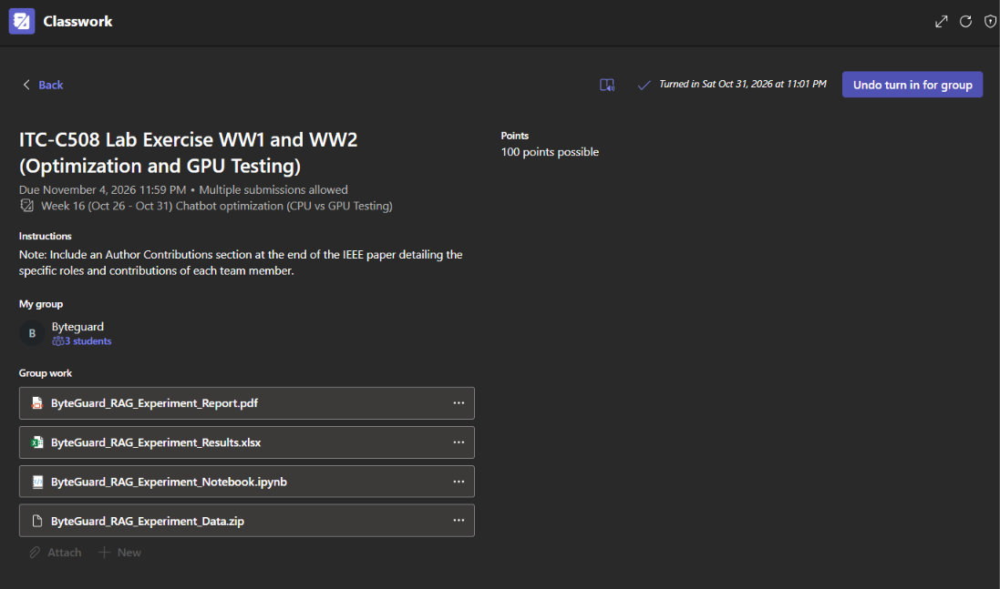

This activity presents our group's experiments on optimizing a RAG-based chatbot using different configurations and testing its performance on CPU and GPU. The experiments focused on comparing chunk sizes, chunk overlap, and retrieval settings to understand how these parameters affect processing time and response performance. The activity also involved collecting experimental results, analyzing performance differences, and documenting our findings.
Submitted Outputs
Microsoft Teams Submission Screenshot

Excel Results File
Google Colab Notebook
IEEE Research Report
Learning Reflection
Through this activity, I learned how testing and optimization can help improve the performance of a RAG-based chatbot. I realized that it is not enough for a system to provide the expected answers. Its speed, performance, and use of computer resources should also be considered when checking how well it works.
Our work with ByteGuard also gave me a better understanding of how teamwork helps when completing technical experiments. Sharing responsibilities and keeping our results organized made it easier to work on the different parts of the activity. I also saw how proper documentation helps us keep track of the work we have completed.
Overall, this experience helped me learn more about testing chatbot performance, improving system efficiency, and working with group members on technical tasks.